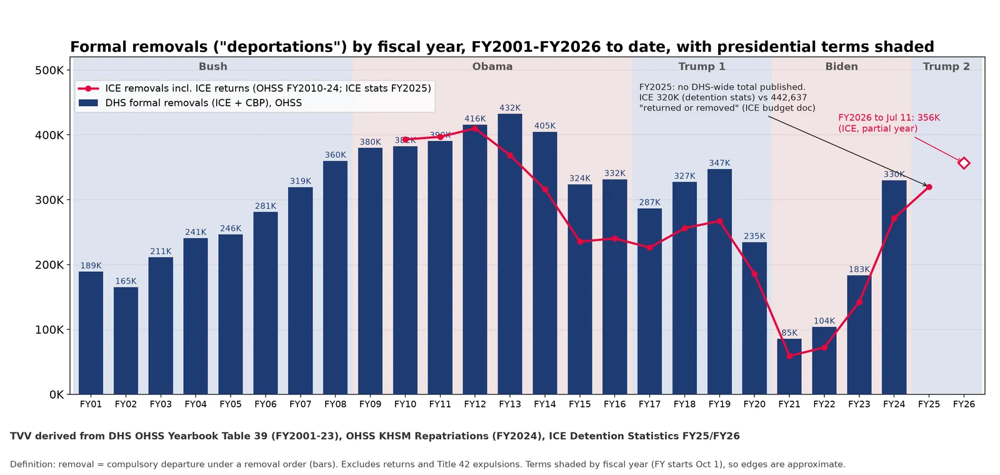
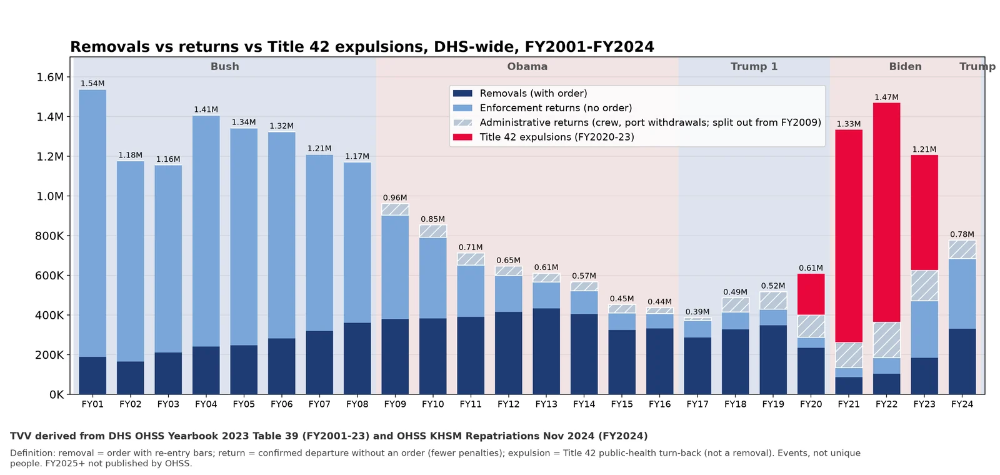
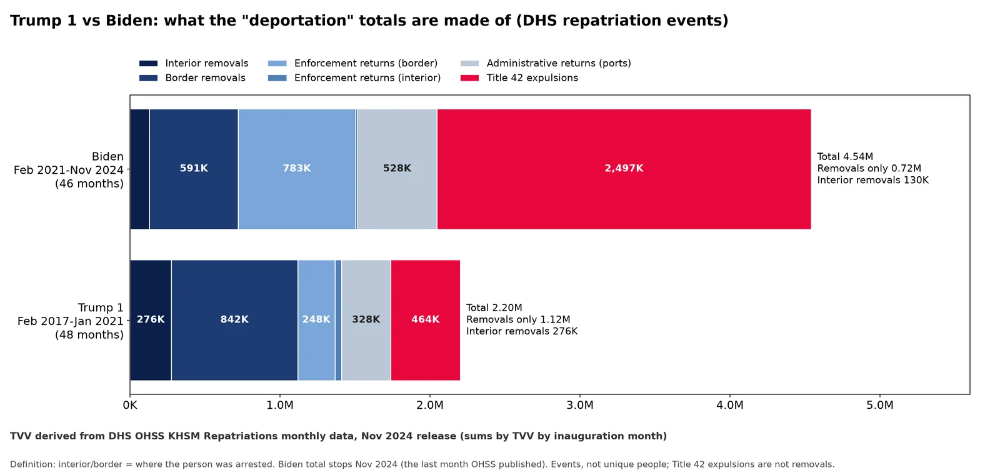
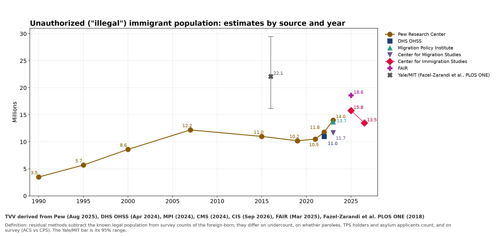
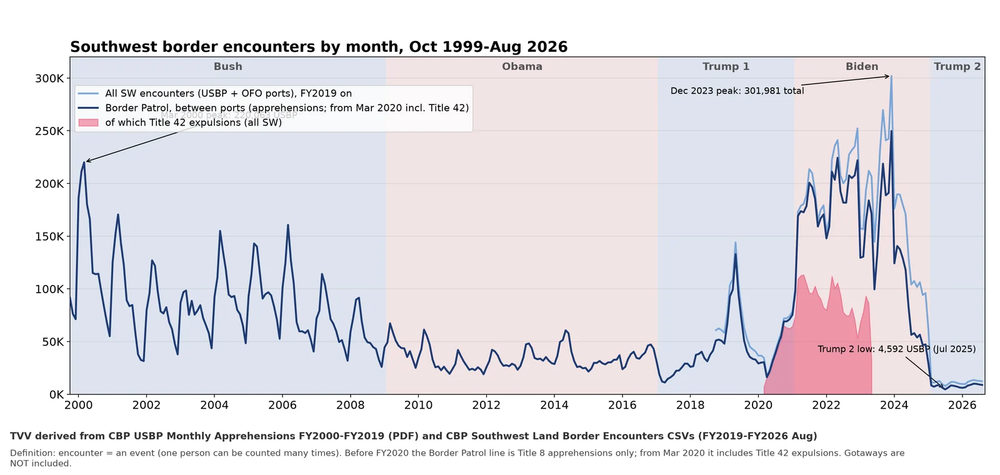
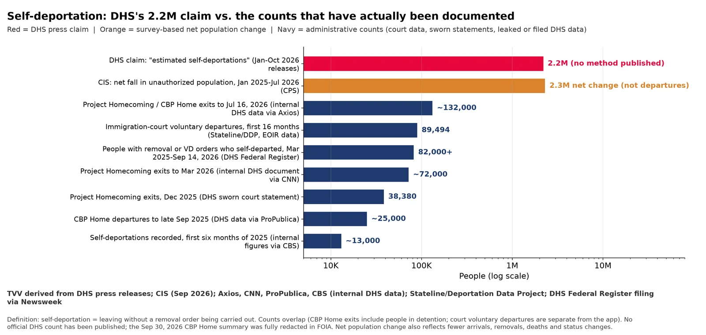
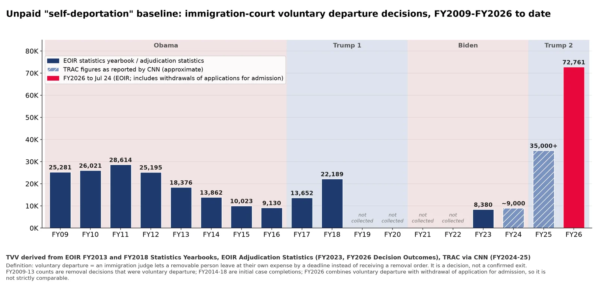

TVV derived charts (built from primary government data) 
Q1: TVV derived: formal removals by fiscal year with terms shaded, FY2001-FY2026 YTD. TVV derived from DHS OHSS Yearbook Table 39; OHSS KHSM Repatriations; ICE Detention Statistics | Date: Built 2026-10-17. Formal removals (order-based) only, DHS-wide; red line = ICE-only removals incl. ICE returnsSource: https://ohss.dhs.gov/topics/immigration/yearbook/2023/table39 https://ohss.dhs.gov/khsm/dhs-repatriations 
Q1: TVV derived: removals vs returns vs Title 42 expulsions, FY2001-FY2024. TVV derived from DHS OHSS Yearbook 2023 Table 39 and OHSS KHSM Repatriations | Date: Built 2026-10-17. All DHS repatriation events by type; Title 42 expulsions are not removalsSource: https://ohss.dhs.gov/topics/immigration/yearbook/2023/table39 https://ohss.dhs.gov/khsm/dhs-repatriations 
Q1: TVV derived: Trump 1 vs Biden totals by type and arrest location (by inauguration month). TVV derived from DHS OHSS KHSM Repatriations monthly data (Nov 2024 release) | Date: Built 2026-10-17. Monthly events summed Feb 2017-Jan 2021 vs Feb 2021-Nov 2024; interior/border = arrest locationSource: https://ohss.dhs.gov/khsm/dhs-repatriations 
Q4: TVV derived: unauthorized population estimates side by side. TVV derived from Pew, DHS OHSS, MPI, CMS, CIS, FAIR, PLOS ONE | Date: Built 2026-10-17. Point estimates of the stock of unauthorized residents; methods and inclusions differSource: https://www.pewresearch.org/race-and-ethnicity/2025/08/21/u-s-unauthorized-immigrant-population-reached-a-record-14-million-in-2023/ https://ohss.dhs.gov/topics/immigration/illegal/population-estimates 
Q5: TVV derived: southwest border encounters by month, Oct 1999-Aug 2026. TVV derived from CBP USBP Monthly Apprehensions FY2000-FY2019; CBP Southwest Land Border Encounters | Date: Built 2026-10-17. Encounters are events; Title 42 shown shaded; gotaways not includedSource: https://www.cbp.gov/document/stats/southwest-land-border-encounters https://www.cbp.gov/document/stats/us-border-patrol-monthly-apprehensions-fy-2000-fy-2019 
Q6: TVV derived: DHS self-deportation claim vs documented counts, 2025-2026. TVV derived from DHS releases; CIS; Axios, CNN, ProPublica, CBS; Stateline/DDP; DHS Federal Register via Newsweek | Date: Built 2026-10-17. Log scale; press claims vs survey net change vs administrative counts. Counts overlap and are not additiveSource: https://www.cnn.com/2026/03/18/us/dhs-self-deport-project-homecoming-invs https://www.axios.com/2026/07/28/trump-self-deportation-ice 
Q6: TVV derived: immigration-court voluntary departure decisions, FY2009-FY2026 to date. TVV derived from EOIR Statistics Yearbooks and Adjudication Statistics; TRAC via CNN | Date: Built 2026-10-17. Judge-granted voluntary departures (a decision, not a confirmed exit); category definitions change across yearsSource: https://www.justice.gov/eoir/media/1344811/dl?inline= https://www.justice.gov/sites/default/files/eoir/legacy/2014/04/16/fy13syb.pdf